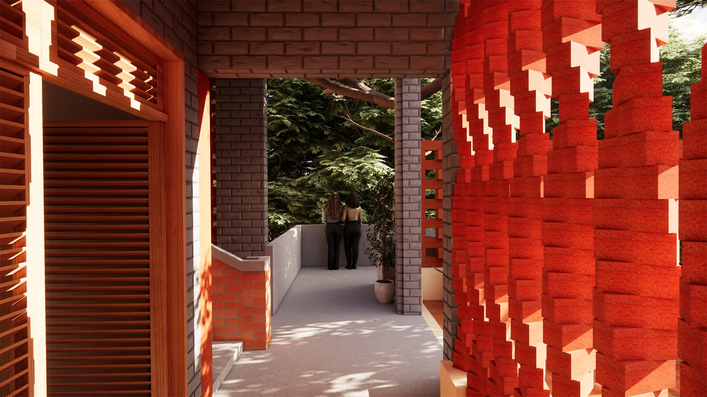
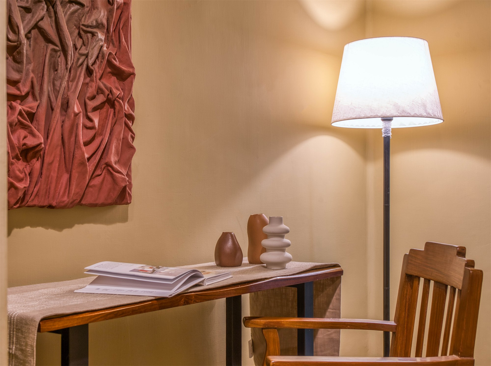
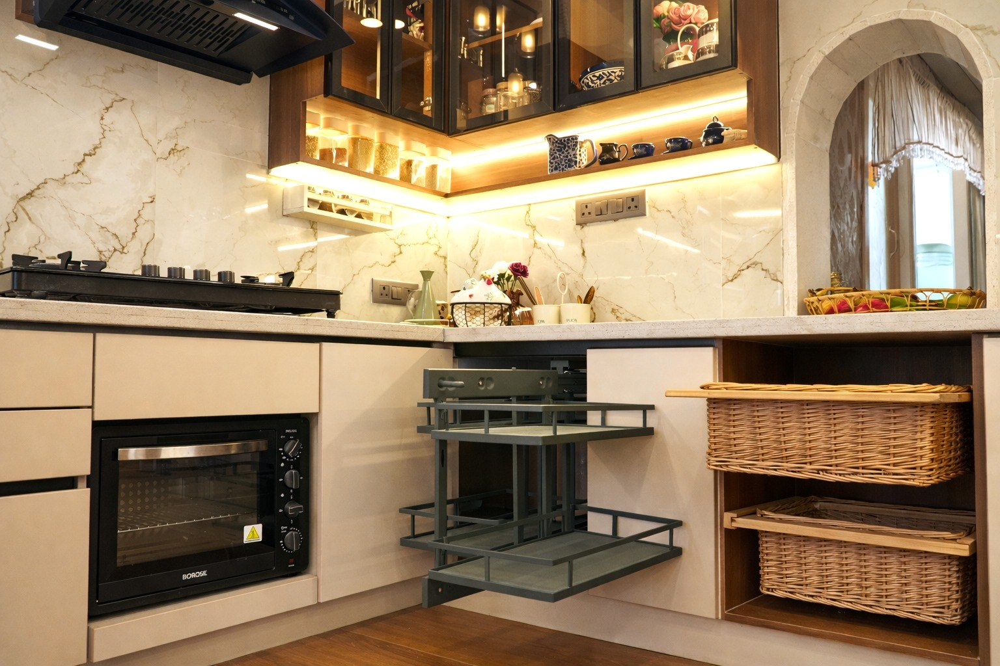
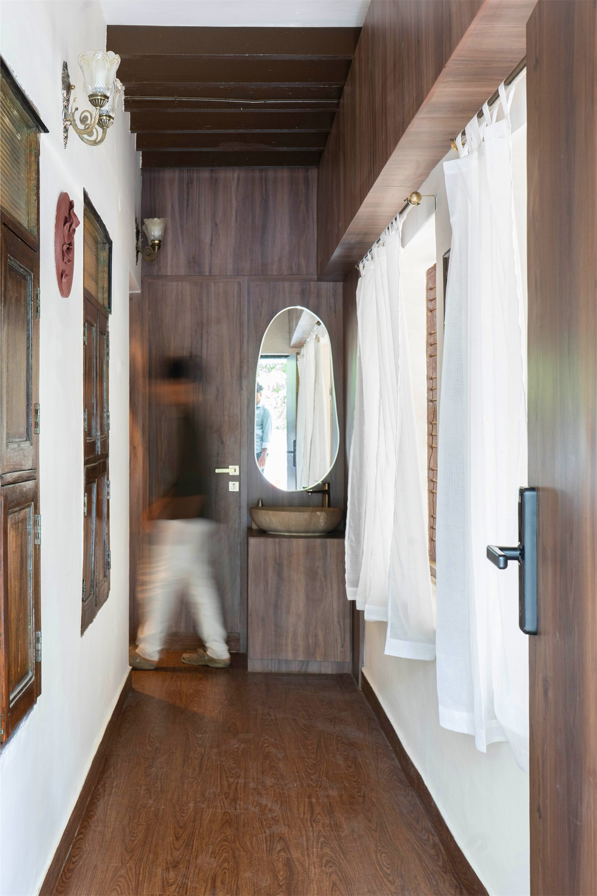
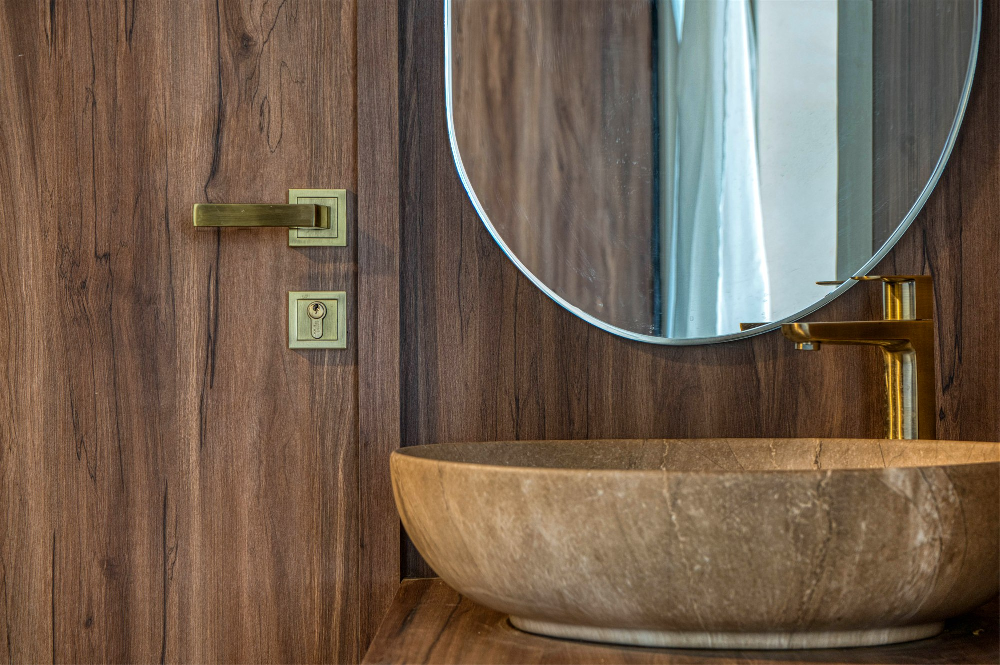
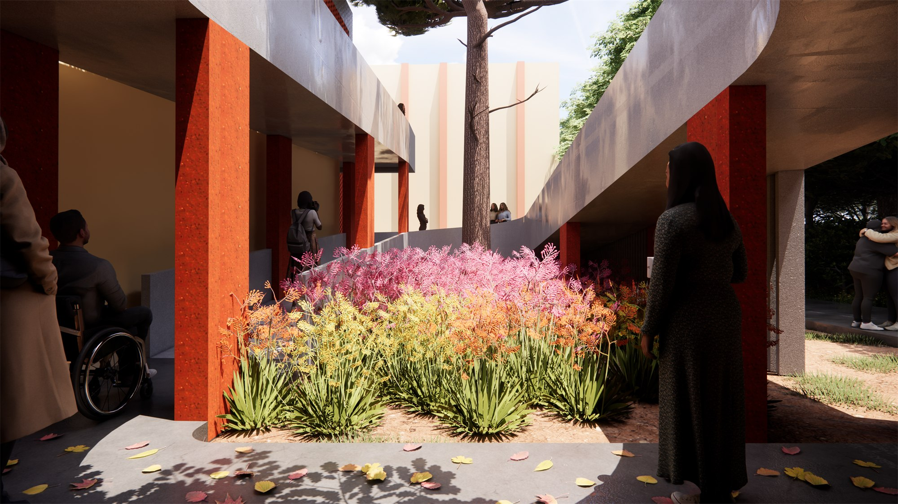

Architecture · Interiors · Execution
A senseof place.
An independent practice
Chennai, India
Spaces are personal.
We design them
to feel that way.

Inside Studio D’vourFrom a place to call home to a space for new ideas, we begin with the people who will use it.
Lynarch Studio is an architecture and interior design practice based in Chennai, working across residential, hospitality, and commercial projects in India and the Gulf.
Founded on February 16, 2024, by Syed Kuraib and Amreen N, the studio was built on a shared vision of creating thoughtful spaces where design is rooted in intention, context, and human experience.
The design process begins with a careful understanding of context, climate, and the people who inhabit the space — placing strong emphasis on proportion, light, materiality, and craftsmanship. Every project evolves through both conceptual thinking and practical execution.
Meet our approachSelected spaces
Different lives.
Different places.

Design through delivery
One conversation.
Every detail.
A close working relationship,
from the first idea to handover.

Listen & understand
We talk about your daily life, your ambitions and your budget. A site study helps us understand what the space can become.
Consultation · Site study · BriefExplore & design
Layouts, sketches and visualizations let us explore the possibilities together. Your feedback shapes the next iteration.
Planning · Concepts · 3D visualizationsResolve the details
We develop the drawings, coordinate the technical requirements, select materials and work through the estimates.
Documentation · Materials · CoordinationBring it to life
For turnkey projects, we coordinate materials, contractors and site work through the finishing details and handover.
Execution · Site review · HandoverThe people behind the practice
Two perspectives.
One studio.
Syed Kuraib
Co-founder
Amreen N
Co-founder